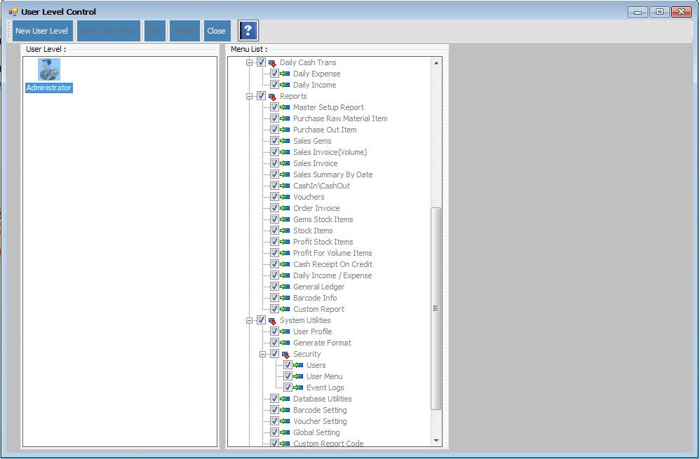

User Menu Setup

- System Utilities အောက်မှ Security မှ User Menu အားနှိပ်ပါ။
- New User Level ကိုနှိပ်ပြီး User Level အသစ်သတ်မှတ်ပေးနိုင်ပါသည်။ (User, Administrator, Staff, etc..)
- သတ်မှတ်ပြီးသော User Level အားပြန်လည်ပြင်ဆင်လိုပါက မိမိပြင်ဆင်လိုသော User Level အား Selection မှတ်ပြီး Edit အားနှိပ်ပြီး ပြင်ဆင်နိုင်ပါသည်။
- သတ်မှတ်ပြီးသော User Level အား Delete လုပ်လိုပါက မိမိ Delete လုပ်လိုသော User Level အား Selection မှတ်ပြီး Delete အားနှိပ်ပြီးDelete လုပ်နိုင်ပါသည်။
- Menu Accessment Form သည် Level အလိုက် အသုံးပြုစေချင်သော Form များကိုသာ Check Box On ထားပေးမည် ဖြစ်ပါသည်။ အသုံးမပြုစေချင်သော Form များကို ပိတ်ထားနိုင်ပါသည်။
- Administrator သည် Form များအားလုံးကို သုံးနိုင်သည်။ အခြားသော User Level များအား အသုံးပြု စေချင်သော Form များကိုသာ CheckBox On ပေးပြီး Save User Menu အားနှိပ်ပြီး သိမ်းဆည်း ပေးရမည်။